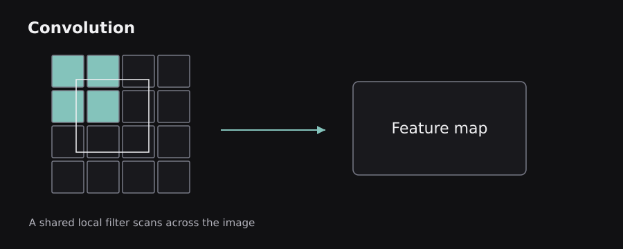
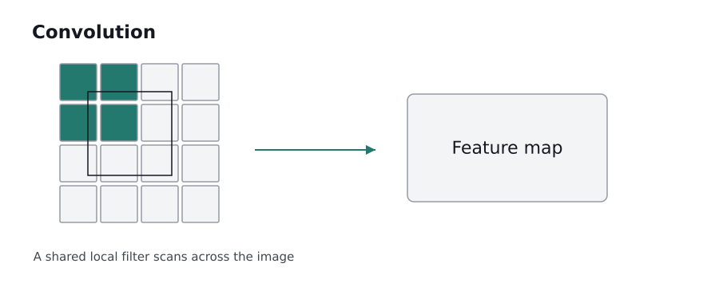
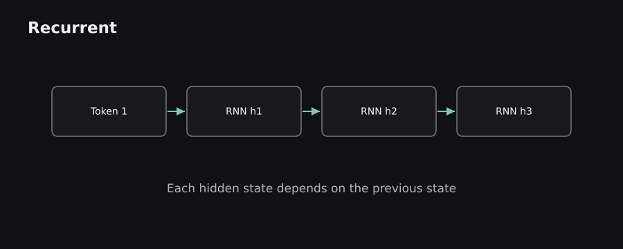
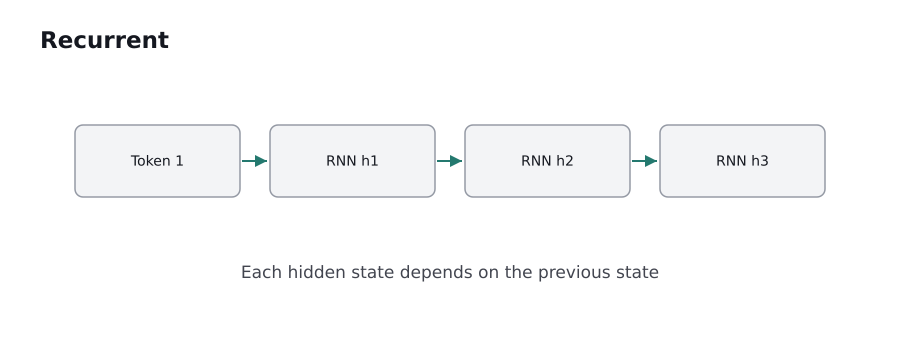

ENGINEERING BLOG / CHAPTER 04 OF 10
Deep Learning Architectures and Representations
Download chapter PDF ↓The basic training machinery stays the same, but the arrangement of layers matters. Images, text, sound, and time series have different structures. This chapter explains why specialized architectures emerged and when each is appropriate.
4.0 — Dense networks, embeddings, and representation learning
A multilayer perceptron (MLP) is a stack of densely connected layers and nonlinear activations. It is a natural starting point for tabular features and for the small transformation blocks found inside larger architectures. But a naive dense network on a 1,000-by-1,000 image would accept one million raw inputs; even a modest hidden layer would require an enormous number of weights, and it would ignore the fact that nearby pixels are related.
Representation learning is the idea that the network learns useful intermediate features rather than requiring a human to specify all of them. Early image layers may respond to local edges; deeper layers may combine patterns into larger structures. For text, an embedding maps discrete tokens into dense vectors whose values are learned during training. A vector is not a dictionary definition; it is a numerical representation useful for the objective that trained it.
For an embedding table shaped (vocabulary_size, embedding_dimension), each token ID selects one row. If vocabulary size is 30,000 and embedding dimension is 256, the table contains 7.68 million scalar entries. Those numbers are optimized so downstream computations can use them.
Important: learned similarities depend on training data and objective. An embedding can reflect bias, polysemy, or context limitations. A model with more parameters can learn richer representations but also incurs higher compute and memory costs.
4.1 — Convolution: detecting local patterns with shared filters
A convolutional neural network (CNN) applies small learned filters across an image. A 3-by-3 filter uses nine local pixels (per input channel) at a time and repeats the same learned weights at different positions. This is weight sharing: the network can recognize a useful local pattern wherever it appears without learning an independent detector at each location.
A convolution output depends on kernel size, stride (how far the filter moves), padding (what is added around image boundaries), and channel counts. The result is a feature map. Multiple filters produce multiple output channels, allowing the model to detect different local structures.
Worked shape example: a single-channel 5-by-5 image with a 3-by-3 filter, stride 1, and no padding yields a 3-by-3 spatial output. With one pixel of zero padding on each side, the spatial output is 5-by-5. For a conventional 2D convolution, spatial size is determined by input size, padding, dilation, kernel, and stride rather than guesswork.
Analogy: a small stencil moves over a picture, checking whether the local pattern resembles what it was designed to detect. The analogy fails because real CNN filters are learned numbers and later layers combine many channels and nonlinear operations.
 
4.2 — Pooling, receptive fields, and classic CNN families
Pooling summarizes nearby activations. Max pooling keeps the largest activation in each window; average pooling takes a mean. These operations shrink feature maps and can improve some kinds of robustness. Modern architectures sometimes replace pooling with strided convolutions; the design choice changes computational and representational properties.
A unit's receptive field is the region of the original input that can influence it. Stacking small convolutions expands effective receptive fields, enabling later layers to combine larger spatial relationships. Context size matters: recognizing a texture patch is easier than understanding how many objects appear across an entire scene.
Classic milestones illustrate changing design ideas: LeNet showed trainable convolutional recognition; AlexNet demonstrated powerful large-scale image classification with GPUs and ReLUs; VGG used uniform stacks of small convolutions; ResNet popularized residual connections for much deeper training. Architectures evolved further through efficient convolution variants and attention-based vision models.
CNNs are useful for image classification, detection, segmentation, audio spectrograms, and other locally structured signals. But they need appropriate data augmentation and can be sensitive to acquisition changes such as lighting, sensors, or image compression. A high score on one visual benchmark is not universal evidence of real-world robustness.
4.3 — Sequence data and recurrent neural networks
A sequence has meaningful order: words in a sentence, samples in audio, transactions over time. A standard feed-forward network typically processes a fixed-size input without an explicit notion of a recurring state. A recurrent neural network (RNN) introduces a hidden state passed from one time step to the next.
A simplified recurrence is hₜ = tanh(Wₓxₜ + Wₕhₜ₋₁ + b). Here xₜ is the current input and hₜ₋₁ summarizes earlier information. To classify a sentence, the network may transform each word in order and use the final state or a collection of states to predict sentiment.
The same weights are reused across positions. This supports variable sequence lengths, but computations depend on preceding time steps, making sequential processing less parallelizable than a transformer's self-attention layers during training. Long sequences also make gradient propagation difficult.
Example: in “The movie was not good,” the word “not” affects interpretation of “good.” An RNN tries to carry relevant context forward through its state. Basic RNNs may forget the crucial earlier word when there are many intervening tokens.
Analogy: the hidden state resembles notes a speaker keeps while reading a paragraph. Unlike explicit notes, it is a fixed-size numerical vector learned to support a task; it can discard important information.
4.4 — LSTMs and GRUs: gates for remembering and forgetting
Long short-term memory (LSTM) networks address shortcomings of basic recurrence with an explicit cell state and learned gates. A forget gate decides how much previous cell information to retain; an input gate determines what new content to write; an output gate controls what part of the cell state becomes the hidden representation. The gates use sigmoid activations to produce values between 0 and 1, and candidate contents typically use tanh.
The intuition is a notebook with erasable pages: the network can preserve a value across many steps rather than continually overwriting everything. However, gating only helps learn long-term dependencies; it does not make unlimited memory or perfect recall possible.
A gated recurrent unit (GRU) uses a simpler gate arrangement, commonly described through update and reset gates, and combines some roles of LSTM states. GRUs can use fewer parameters than comparable LSTMs, but which works better depends on data, tuning, and constraints.
Both are still seen in streaming signals, time-series forecasting, and resource-constrained sequence tasks. A transformer is not always the smallest or fastest option, especially when a short rolling state is valuable.
 
4.5 — Sequence-to-sequence learning and attention before transformers
Early sequence-to-sequence (seq2seq) systems used an RNN encoder to represent an input sequence and an RNN decoder to produce an output sequence. Machine translation is a natural example: the encoder reads English words and the decoder generates French words. A basic encoder-decoder using one fixed context vector can create an information bottleneck for long sentences.
Attention helped by letting a decoder step look back at multiple encoder states and compute a weighted combination. Instead of expecting one fixed vector to store every detail, the decoder could focus on the input positions most relevant to the next output token.
For a translation of “The red car stopped,” a decoder producing a word for “car” may assign greater weight to the encoder state representing that noun, while still considering surrounding grammar. Weights are calculated from learned compatibility scores and normalized with softmax. An attention map is a helpful diagnostic but not a perfect, standalone explanation of why a model produced an answer.
This development matters historically and conceptually: attention did not suddenly appear with the transformer. The transformer reorganized sequence modeling around attention mechanisms and feed-forward blocks without requiring recurrence in its central architecture.
4.6 — Autoencoders: compressing and reconstructing information
An autoencoder learns to reconstruct its input. An encoder maps input x to a latent representation z; a decoder maps z back to reconstructed x̂. Training minimizes a reconstruction error. If the latent representation has a carefully constrained capacity, the model may learn a useful compressed representation rather than simply copying inputs.
Example: an image autoencoder might map a 64-by-64 grayscale image (4,096 pixel values) to a 128-dimensional latent vector and reconstruct the image. The compact representation is not guaranteed to preserve all details. It retains information favored by the architecture, data, and reconstruction loss.
A denoising autoencoder reconstructs a clean input from a deliberately corrupted version. A variational autoencoder (VAE) learns parameters of a probability distribution in latent space and balances reconstruction with a regularization term, often a KL divergence. This supports sampling and structured latent modeling, but blurry reconstructions can occur with some choices of likelihood and training objective.
Autoencoders are used for representation learning, compression, anomaly detection, and generative modeling. High reconstruction error can signal an anomaly but is not proof of fraud, failure, or disease without task-specific validation.
4.7 — Generative adversarial networks and diffusion models
A generative adversarial network (GAN) pairs a generator that makes synthetic examples with a discriminator trained to distinguish generated examples from real training samples. The two networks train in opposition. The generator tries to create plausible samples, and the discriminator becomes a changing learning signal.
GANs can produce striking outputs but training may be unstable. Mode collapse occurs when the generator repeatedly produces a limited variety of outputs even though the true data distribution is diverse. Evaluation requires both quality and coverage; visually impressive samples can hide poor diversity.
Diffusion models follow another approach. A forward process gradually adds noise to data; a learned reverse process predicts how to remove noise (or related quantities) step by step. A common intuition is learning to reconstruct a meaningful image from increasingly noisy states. The precise model objective and sampler determine the mathematical details.
Modern image and audio generation often use diffusion-family methods, including latent-space variants. Generative quality does not imply factual reliability, copyright clearance, or safety. The key conceptual difference is that a classifier predicts a label, while a generative model attempts to learn a distribution capable of producing new examples.
4.8 — Transfer learning and fine-tuning
Training a large representation model entirely from scratch demands substantial data and compute. Transfer learning reuses knowledge acquired on one task or dataset for another. In computer vision, a network pretrained on diverse images may provide useful low-level and semantic features for a smaller specialized dataset.
A common approach freezes the pretrained backbone and trains a new classification head. Another approach fine-tunes some or all pretrained layers using task-specific examples at a carefully selected learning rate. Unfreezing everything immediately with a large learning rate can destroy useful prior representations, sometimes called catastrophic forgetting.
Example: a small dataset of industrial equipment images may be insufficient to learn every useful edge and texture detector from zero. A pretrained CNN backbone can accelerate development. But natural-image pretraining may be less helpful if the target images come from a radically different modality such as thermal scans.
Transfer does not eliminate labeling requirements or guarantee the pretrained model has appropriate licensing, privacy properties, or domain coverage. The strongest choice is empirical: compare against a simpler baseline and validate on the target environment.
4.9 — Picking an architecture for the structure of the problem
The architecture should be chosen after understanding the data. A tabular loan-risk dataset may favor linear models or boosted trees. Photographs suggest CNNs or vision transformers. Short streaming sensor sequences may benefit from compact recurrent or temporal-convolutional models. Long-context language modeling motivates transformer architectures and their efficient variants.
Compare approaches along quality, data requirement, inference latency, training cost, memory, explainability, maintainability, and deployment environment. A neural architecture with slightly better validation accuracy may be worse in production if it is too expensive, unreliable, or impossible to update safely.
A network's output depends on the training objective; there is no general promise that it learns human-like concepts. Before moving on to language models, the next chapter focuses on training deep networks reliably, because even a theoretically suitable architecture can fail through poor data handling or optimization.
Sources and further reading
These sources supplement the original explanations. The uploaded PDFs and cheatsheets informed the topic coverage; their illustrations and prose are not republished.